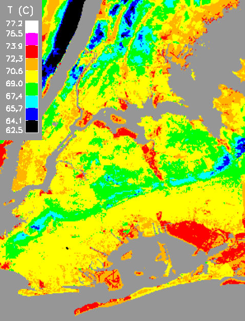
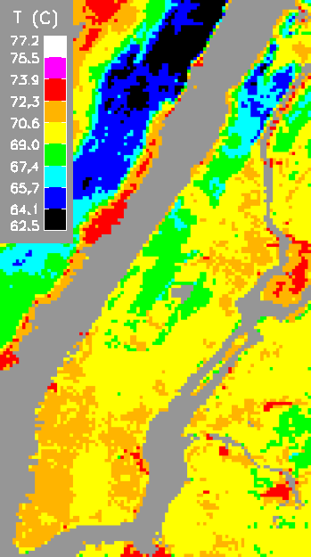
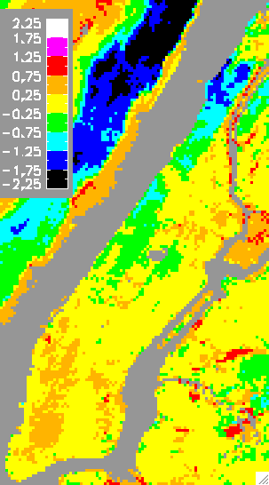
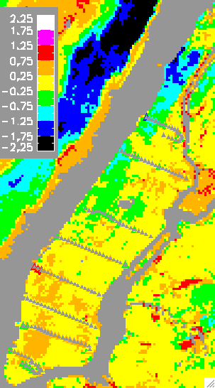
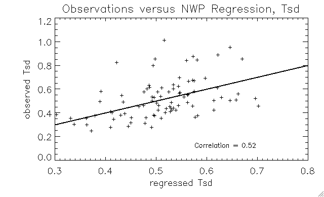
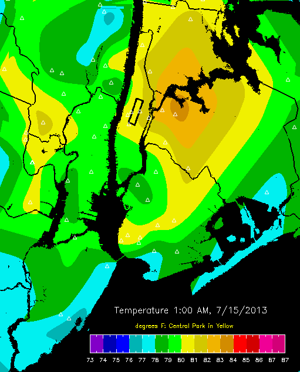

Below is shown estimates of spatial temperature patterns for Manhattan or the 4 northern boroughs of New York for 3 pm today and tomorrow. These maps are based on surface characteristics, the average temperature from the weather forecast, and an estimate of spatial temperature variability based on forecast weather conditions. The temperature patterns are estimated based on a series of walking field campaigns throughout Manhattan along the shadowed sides of streets, between 2-3 pm.
The maps are updated each morning by 11 am.
|
|

|
|
 |
|
Some explanation will help understand the daily maps above. The plots below are based on regressions between average measured temperatures at street level and local surface characteristics (elevation, vegetation, building geometry, albedo, local water fraction). Sunny avenues are not modelled due to concerns about instrument shielding. The scale shows the number of standard deviations (SD) from the average, where the SD is calculated from the temperatures measured throughout Manhattan for each day data was collected. Note that yellow represents an average temperature; the red end is warmer and the blue end is cooler.
|  Shady Streets Surface Based Model - This shows expected spatial temperature variations on the shady side of the streets, based on regression of surface characteristics. |  Observation Routes Superimposed - the points at which observations are averaged together are shown by gray triangles, surrounded by triangles with colors that match the observations. | Observations and Predictions - This is the same as the middle map, but with the gray triangles removed. If the predicted anomalies match the observed anomalies, the colors of the observed triangles will match the background and will not be seen. |
The fixed instrumentation experienced 3 months of weather. Hourly averages at each location filters out noise due to fluctuations from convection. The standard deviation of these 10 fixed hourly averages reflects the spatial variability seen in the street walks. These three months of variability can be regressed against weather variables to arrive at a method to predict surface temperature variability from weather forecasts.

Surface temperature, relative humidity, wind components, cloud cover and temperature lapse rates were regressed against the spatial variability in temperature. The plot above shows the predicted variability versus the observed variability using this method: the fit is marginal, but there is definite information content.
The plan to forecast temperature anomalies is therefore simple, and proceeds in two steps.
This map combines CCNY's 1 km resolution urban weather research model (uWRF) with the higher resolution surface influenced temperature anomalies of above. This allows capture of midscale circulations such as seabreeze or the effects of different wind directions interacting with topography.
Status: under development, possibly available the winter of 2015.
This map shows temperature interpolated between stations in the MetNet system. Caution should be used when using data interpolation on fields that are known not to be smooth at the resoluton of the original data points: our field campaigns have shown variations at the neighborhood scale. Also, individual stations could be strongly effected by highly localalized conditions. Nonetheless such an interpolation can show the overall regional temperature pattern around the city if enough stations are included.

Status: awaiting direct feed from MetNet, possibly 2015